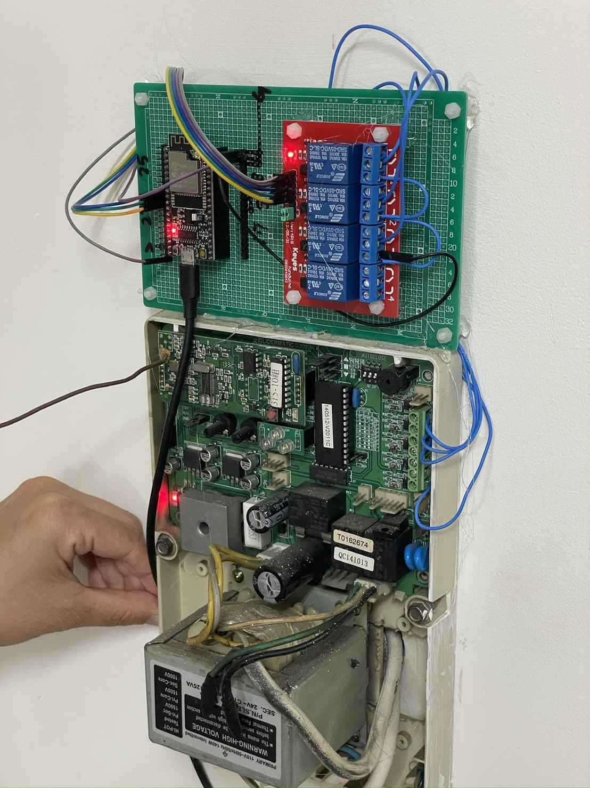
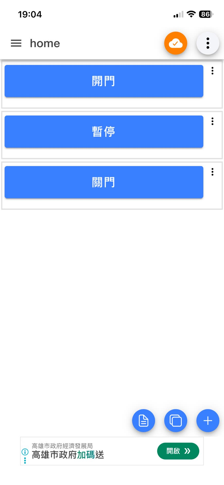
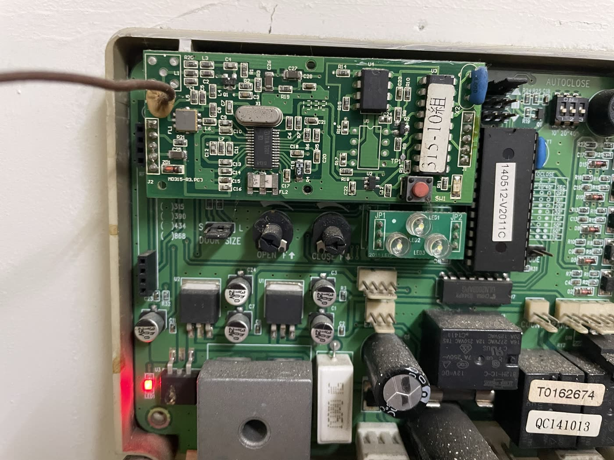
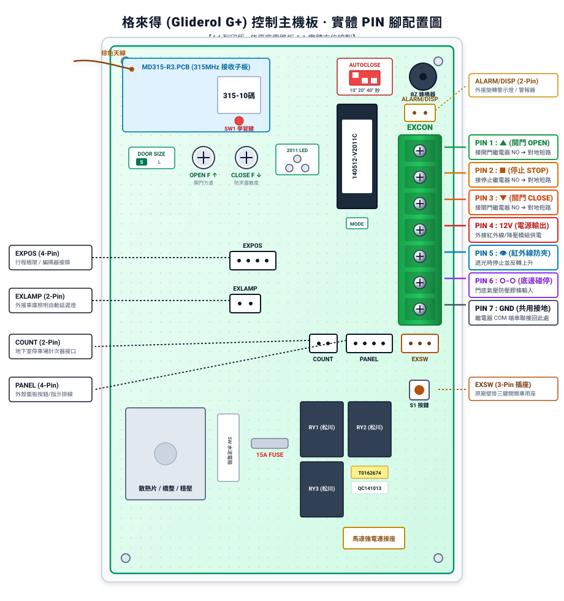
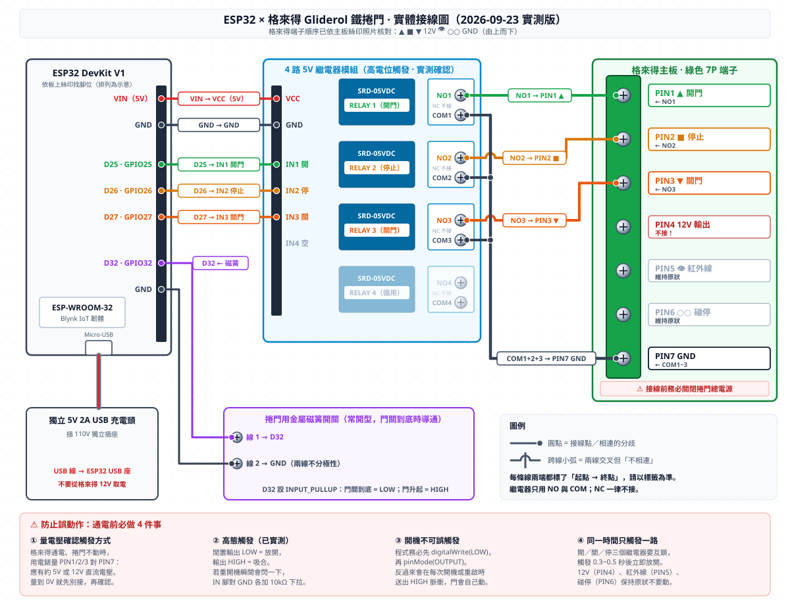
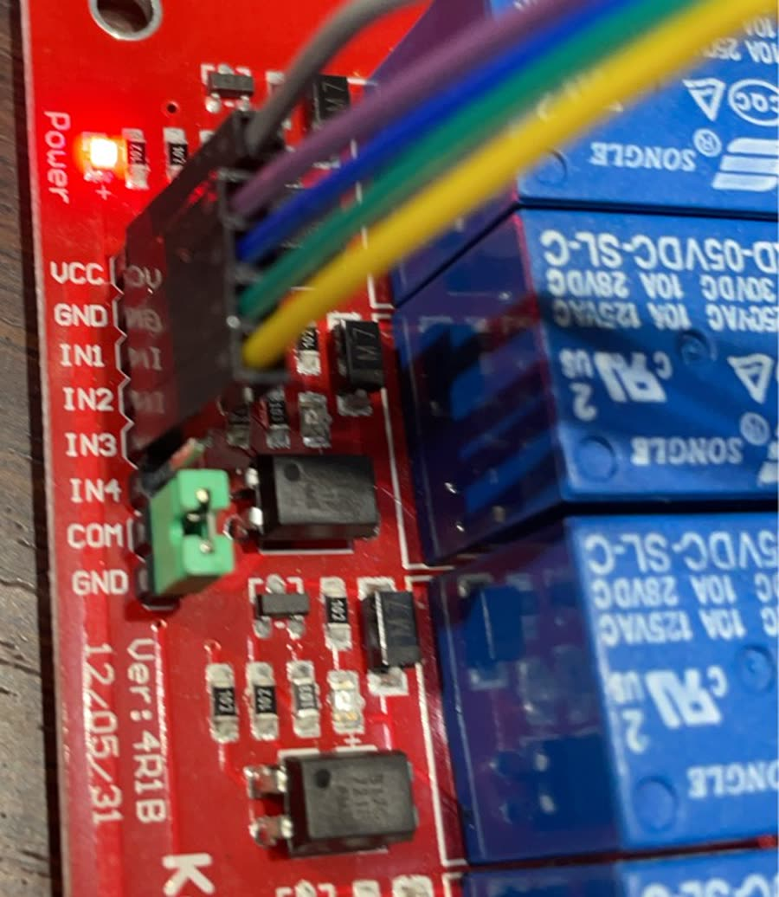

專題實作 · 2026-09
地下室鐵捲門：ESP32 × MQTT 遠端控制
家裡地下室的鐵捲門是 2014 年的舊機，只有遙控器和牆上的按鈕。 這次不換主板、不動原本的線路，只加一片繼電器「代替手指按按鈕」， 做到手機 App 和自製網頁都能開關門。這頁記錄整個過程，包含三個踩了才知道的坑。
00先看成果


整條路徑是：手機或瀏覽器 → MQTT broker → ESP32 → 繼電器 → 鐵捲門主板。 原本的遙控器和牆上按鈕完全不受影響，照樣能用。
01這頁有什麼
02現場：一台 2014 年的主板
拆開牆上的機箱，裡面是格來得 Gliderol G3000 的控制板，韌體標籤寫著
140512-V2011C，也就是 2014 年 5 月的版本。板子右側有一排綠色的七腳端子（EXCON），
這排就是外接按鈕用的。

端子的絲印由上而下是 ▲ ■ ▼ 12V 👁 ○○ GND。對照實機照片一個一個確認之後， 整理成這張表：
| PIN | 絲印 | 用途 | 這次的接法 |
|---|---|---|---|
| 1 | ▲ | 開門 | 接繼電器 1 的 NO |
| 2 | ■ | 停止 | 接繼電器 2 的 NO |
| 3 | ▼ | 關門 | 接繼電器 3 的 NO |
| 4 | 12V | 12V 電源輸出 | 不接 |
| 5 | 👁 | 紅外線防夾 | 維持原狀 |
| 6 | ○ ○ | 碰停開關 | 維持原狀 |
| 7 | GND | 公共地 | 接三個 COM |

不同型號的主板腳位不一樣。照著這張表接到別台機器上很可能出事， 動手前務必查自己那台的說明書或絲印，並用萬用表確認。
03想法：只是代替手指按按鈕
這排端子的工作方式很單純：把某一腳對 GND 瞬間短路，就等於按了一下對應的按鈕。 主板收到之後會自己把門跑到底，或是收到停止就停下來。
所以整個專案的核心只有一句話：讓 ESP32 在收到指令時，把對應的那一腳對地短路 0.5 秒。
刻意保留的原則有三個：
- 不動原本的線路。遙控器、牆上按鈕、紅外線防夾、碰停開關全部維持原狀。
- 只用繼電器的常開接點。ESP32 沒電或當機時，接點是斷開的，門不會亂動。
- 不從主板取電。ESP32 用獨立的 5V 充電頭，不去碰主板的 12V 輸出。
04接線設計
先畫接線圖再動手。這張圖是用 Python 程式產生的，所有線頭座標都從同一份腳位定義算出來， 避免手畫時線接錯位置。

| ESP32 | 繼電器 | 主板 | 功能 |
|---|---|---|---|
| D25 (GPIO25) | IN1 → NO1 | PIN1 ▲ | 開門 |
| D26 (GPIO26) | IN2 → NO2 | PIN2 ■ | 停止 |
| D27 (GPIO27) | IN3 → NO3 | PIN3 ▼ | 關門 |
| VIN / GND | VCC / GND | — | 5V 供電，務必共地 |
| — | COM1+2+3 | PIN7 GND | 三個 COM 併接 |
| — | NC | — | 一律不接 |
怎麼分辨 NO 和 NC
每顆繼電器有三個接點，中間一定是 COM，兩側一個是 NO（常開）、一個是 NC（常閉）。 用萬用表的通路檔：繼電器放開時，跟 COM 會 嗶的那側是 NC，不會 嗶的那側才是 NO。 三組都要各量一次，不要只量一組就照推。
05坑一：繼電器的觸發方向
症狀
一送電，三顆繼電器立刻全部吸合，LED 全亮。
如果這時候線已經接上主板，等於開機瞬間同時按下開門、停止、關門三個按鈕。 幸好當時還沒接上去。
原因
原本以為手上這片是常見的低電位觸發模組，所以程式開機時把三隻腳設成 HIGH 當作「放開」。
結果這片 Keyes 4R1B 的排針上除了 IN1–IN4，還有一組 COM–GND 插著跳帽，
這個跳帽決定觸發方向：
COM接GND（出廠插法）：高電位觸發，輸出 HIGH 才吸合COM改接VCC：低電位觸發

怎麼確認
不要用猜的。把三隻腳都設成 LOW，看繼電器是放開還是吸合，一次就分辨出來： 放開就是高電位觸發，吸合就是低電位觸發。程式裡只要改一個常數：
const int RELAY_ON = HIGH; // 吸合
const int RELAY_OFF = LOW; // 放開（預設狀態）06韌體：讓門不會自己動
鐵捲門跟閃爍 LED 不一樣，誤動作一次就是幾百公斤的門板在動。韌體裡有七道防線， 每一道都是針對一種具體的失敗情境：
| 防線 | 擋掉什麼情況 |
|---|---|
| 開機先壓成「放開」再切成輸出 | 開機或重啟瞬間冒出一個脈衝 |
| clean session | 離線期間累積的指令一連線就全部灌進來 |
| 連線後主動清掉控制 topic 的 retain 訊息 | broker 上留著舊訊息，一重連門就自己開 |
| 連線後 3 秒內不執行任何指令 | 同上，補一層保險 |
| 同一指令 1.5 秒內只執行一次 | 手機連點、訊號重送 |
| 三路互鎖 | 兩個以上的繼電器同時吸合 |
| Wi-Fi 斷線期間強制全放開 | 網路不穩時繼電器卡在吸合狀態 |
開機不誤觸發
順序很重要：先寫電位、再切輸出。反過來會在每次開機時送出一個脈衝。
void relayInit(int pin) {
digitalWrite(pin, RELAY_OFF); // 先把電位壓成「放開」
pinMode(pin, OUTPUT); // 再切成輸出
digitalWrite(pin, RELAY_OFF);
}三路互鎖
光是在送出指令時檢查還不夠，因為程式其他地方可能寫錯、腳位也可能被雜訊拉起來。
所以 loop() 每一圈都無條件把「不是當前吸合中」的腳位壓回去：
void enforceInterlock() {
for (int i = 0; i < 3; i++) {
if (RELAY_PINS[i] != activePin) relayOff(RELAY_PINS[i]);
}
}
脈衝本身也不用 delay()，而是記下起始時間、由 loop() 負責放開，
這樣 0.5 秒的點動期間 MQTT 不會被卡住。
還可以更保險：從通電到程式開始跑之間約有 0.2 秒，腳位是浮接的。 在三個 IN 腳對 GND 各加一顆 10 kΩ 下拉電阻，這段空窗就能徹底堵住。
07坑二：停電復電就再也連不上
症狀
平常都正常，但停電復電之後，ESP32 再也連不上 broker，門變成遙控不了。
原因
MQTT 走 TLS 加密，驗證伺服器憑證需要正確的時間，所以程式開機時會先跟 NTP 校時。
問題是原本的寫法只在 setup() 裡校一次，而且只有 Wi-Fi 在期限內連上才會執行。
停電復電時，分享器開機通常比 ESP32 慢，這時 Wi-Fi 連不上、校時被跳過， 時間停在 1970 年。之後就算 Wi-Fi 自動接上了，TLS 還是會因為時間不對而一直驗證失敗， 除非有人去手動重開機。
地下室鐵捲門正好是停電之後最需要能用的東西，這個 bug 特別致命。
修法
加一個「校時成功了沒」的旗標，連上網卻還沒校到時，每 30 秒補做一次：
} else if (!timeSynced && (lastNtpTryMs == 0 || now - lastNtpTryMs > 30000)) {
lastNtpTryMs = now;
syncTime(); // 校到才會去連 broker
} else if (!mqtt.connected()) {
...順帶也把 Wi-Fi 改成可以設定多組，依序嘗試，斷線超過 15 秒就重新掃一輪。
08坑三：網頁不能直接連 MQTT
症狀
想寫個網頁直接連 broker，結果怎麼連都逾時。
原因
瀏覽器只能走 MQTT over WebSocket，不能直接用一般的 MQTT 連接埠。
用 Test-NetConnection 測，WebSocket 常用的 8083 / 8084 看起來都是「開啟」的，
但實際用 MQTT 客戶端連過去，三種常見路徑全部逾時。
教訓：TCP 連得上不代表服務存在。有些防火牆對任何連接埠都會回應交握， 造成「埠是開的」假象，一定要用真正的協定去測。
順帶一提的安全問題
就算 broker 有開 WebSocket，把帳號密碼寫進網頁的 JavaScript 也是不行的： 任何人按 F12 就能看到原始碼，等於把家裡鐵捲門的鑰匙貼在網路上。
兩個問題的答案是同一個：在電腦上跑一支小程式當中間層。
09網頁控制台
電腦端的 door_web.py 一次解決三件事：
- 瀏覽器不能播 RTSP，所以把攝影機畫面轉成 MJPEG 再餵給網頁。
- broker 沒開 WebSocket，所以指令由這支程式代發。
- 帳號密碼留在電腦端，不會出現在網頁原始碼裡。
網頁本身很單純：上半部是即時畫面，下半部是三顆大按鈕，外加一顆顯示 ESP32 在不在線上的狀態燈。
def send(self, cmd):
"""回傳 (成功, 訊息)。擋掉連點，並在離線時直接拒絕。"""
if self.state["avail"] != "online":
return False, "鐵捲門控制器不在線上，指令沒有送出"
if time.monotonic() - self.last_sent.get(cmd, 0) < MIN_GAP_SEC:
return False, "剛剛才送過同一個指令，請稍等一下"
self.client.publish(CMD_TOPICS[cmd], "web", qos=1)只在自己的區網內使用。不要為了在外面也能開門，就在路由器上把這個連接埠對外開放， 那等於把鐵捲門的開關放到公開網路上。真的需要遠端，用 VPN 之類的方式回家比較安全。
10還沒做完的事
- 磁簧開關還沒裝。裝了才知道門是真的關到底了，還是卡在半路。程式裡的位置已經留好。
- 三個 IN 腳的下拉電阻還沒加。通電瞬間那 0.2 秒目前實測沒事，但加了才算徹底。
- 攝影機畫面還沒接通。程式寫好了，卡在路由器把攝影機隔離在另一個網段，還沒去調設定。
已經完成並實測：接線、韌體、手機 App 控制、網頁控制台， 以及開機不誤動作、三路互鎖、停電復電後自動恢復。
11下載與安全提醒
程式包裡有 ESP32 韌體、電腦端網頁控制台，以及設定範本。 所有帳號密碼都已經換成佔位符，要自己填。
要動手做之前，請先想清楚這幾件事：
- 填好密碼的
secrets.h和settings.py不要上傳到 GitHub 或公開分享。 - 不要用不需要帳密的公開 broker。任何人猜到你的 topic 就能開你家的門。
- topic 前綴自己取一段別人猜不到的字串，不要用
home/door這種。 - 鐵捲門是重物，誤動作會夾傷人。接到主板之前，先在桌上確認繼電器只在收到指令時才動作。
- 機箱裡有 110V 交流電，拆裝時務必先斷電。
這份紀錄是自家鐵捲門的實作過程，不同型號的主板差異很大，照抄不一定能用。 動到自家設備與市電線路請自行評估風險。